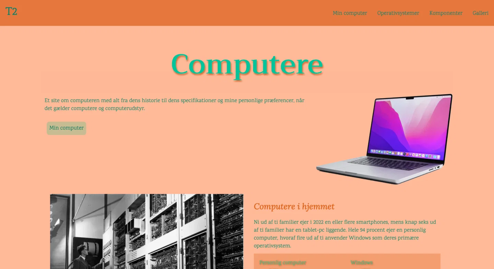

LAURA'S
PORTFOLIE
TEMA 2
Da dette var det første tema, var der mange basics, der skulle etableres. Jeg lærte at bruge XD til at lave en mockup, Photoshop til at redigere mine billeder i og Visual Studio Code til at code HTML og CSS. Derudover lærte jeg om designprincipper, gestalt love. Gestalt lovene brugte jeg, da jeg skulle lave mit emnesite, hvor jeg valgte at lave om garn - noget jeg har meget af og på den måde også kunne tage mine egne billeder.
Jeg ville gerne opnå et let og roligt udtryk, da det er den effekt jeg synes garn kan give. Det
gjorde jeg ved at
benytte loven om similarity i mine overskrifter, hvor de alle er skrevet med små bogstaver.
Ud fra designprincippet om at benytte kontraster, brugte jeg den rødelige-orange som kontrast
farve,
til de mildere gule
og grønlige farver.
Jeg valgte at brugebilleder af garn, der matchede de farver jeg ønskede sitet skulle have.
Under fanen “bomuld” har jeg benyttet gestalt loven om kontinuitet. Hvor billeder og tekst lægger sig i en slange ned langs siden. Det er for at give sitet de her bløde ‘former’ som garn har. For at opnå dette brugte jeg grid i CSS og HTML til at sætte billederne og teksten op. Dette var for at udfordre mig selv og lege med udtrykket.
Jeg redigerede billederne i Photoshop, ved at skrue lidt op for farven, for at få det til at poppe lidt, men så efterfølgende putte et ’slør’ over, så de blev mere nedtonet. Gjort i denne rækkefølge for at billederne ikke kom til at se grå og kedelige ud. Derefter lavede jeg dem fra jpeg til webP, så de fylder mindre på sitet.
